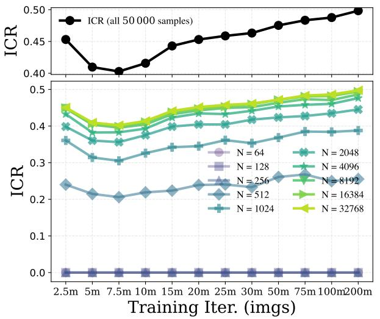

Figureure 1 · : Overview of the ICR FrameworkFigure 1: Overview of the ICR Framework. Each training image is augmented and passed through the diffusion feature extractor, decomposing representations into an invariant component ?? and a residual ??; their covariances define ICR (a–b). ICR serves as a unified diagnostic: it identifies the optimal noise level for classification tasks, tracks generative quality without sampling, and anticipates memorization onset during training (c).这张图概括 Evaluating the Representation Space of 的整体方法流程。阅读时先看模块之间传递的训练信号，再看作者如何把目标拆成可优化的子问题。

Figureure 13 · : Stability of ICR estimates under subsamplingFigure 13: Stability of ICR estimates under subsampling. We evaluate ICR on CIFAR10 using a pretrained EDM model (4095 training samples) and a fixed noise level, varying the number of training samples used to estimate the covariances from $N = 1 6$ up to the full 50K images. As ??increases, the estimated ICR quickly showcase the similar trend close to the full data estimate.这张图来自论文 PDF 的结构化抽取。当前用于辅助理解 Evaluating the Representation Space of 的方法或实验，请结合正文精读段落一起看。
核心问题
视觉 foundation model 和 diffusion/RAE 正在共享 latent 空间；这篇给了一个从自监督角度读 diffusion representation 的工具。
方法拆解
将 diffusion features 分解为 invariant component 与 residual/noise-sensitive component，并提出 Fisher-based Invariant Contamination Ratio (ICR) 来度量 residual variation 如何污染 invariant signal。